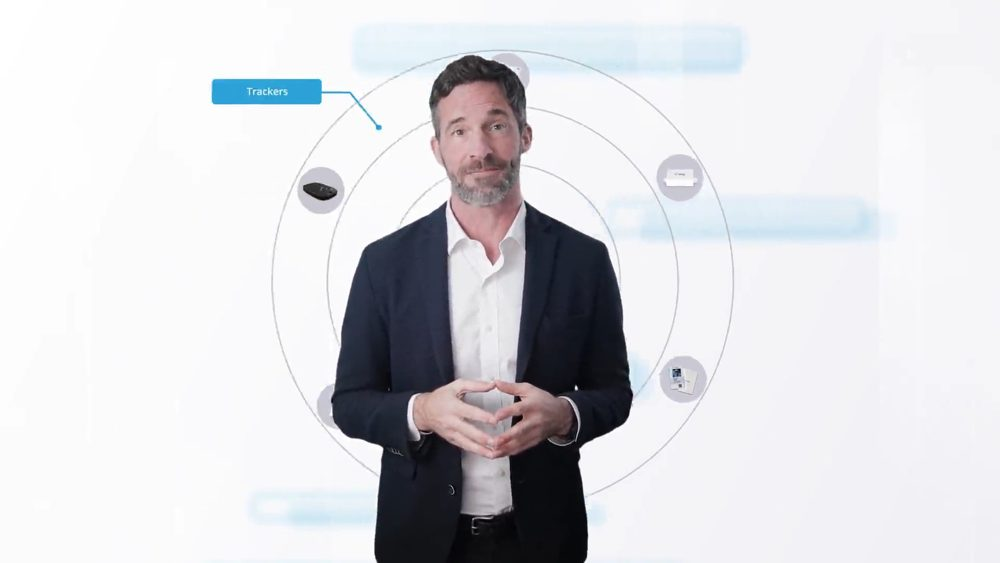
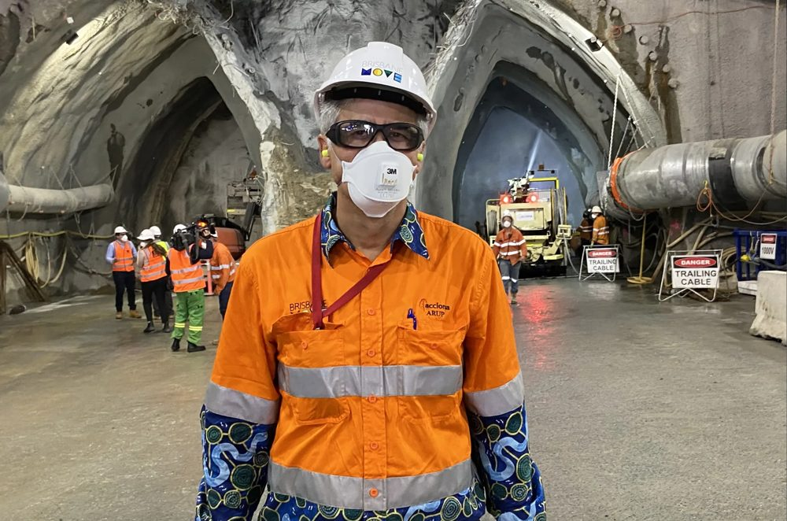
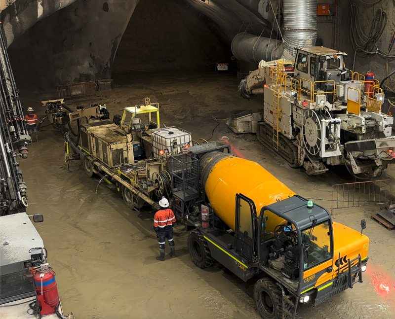
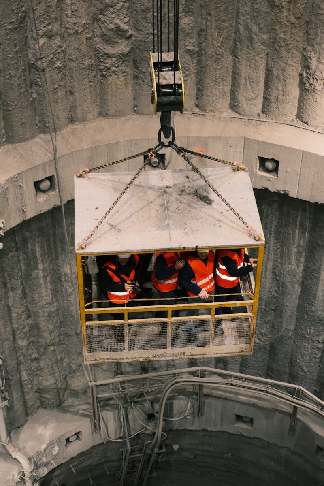
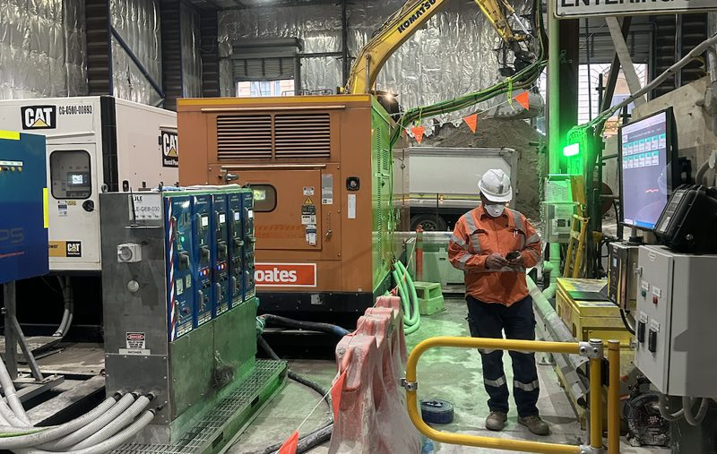

Operational Digital Twin
A Live Operational Understanding Of The Operation
Explore Operational Intelligence In Action
Discover how organisations are using Operational Intelligence to improve safety, productivity and operational performance across mining, tunnelling, infrastructure and critical operations.
From platform demonstrations and customer stories through to industry insights and technology deep-dives, our video library provides a visual introduction to the iottag ecosystem.

A Live Operational Understanding Of The Operation

Understanding Exposure Before Incidents Occur
Understanding The Factors Influencing Operational Performance
Our team includes engineers, operational specialists and technology experts with experience across:


See how organisations are using Operational Intelligence to solve real-world operational challenges.



See how organisations are using Operational Intelligence to solve real-world
operational challenges.
Our team includes engineers, operational specialists and technology experts with experience across:

Watch platform demonstrations, customer stories and industry insights.